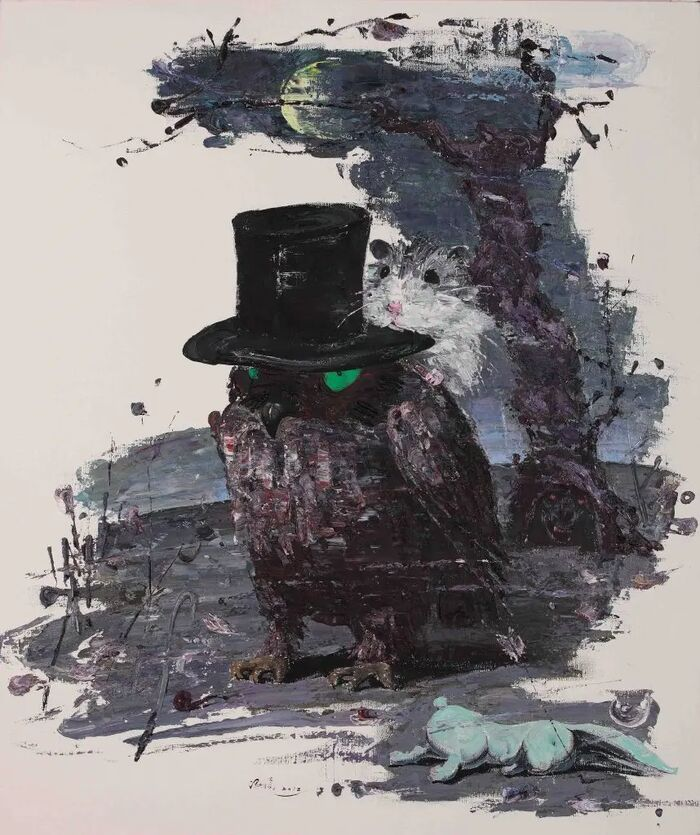

展览Exhibitions
两次个展的现场记录与评论文本。Installation records and critical texts from two solo exhibitions.

寓言 · Tales
Tales
2008 年 4 月 17 日至 5 月 17 日，冯硕个展「寓言」在纽约 Marlborough Chelsea 举行。展览集中的是此前数年的绘画：画面被压平，人物与动物共处一个没有透视的空间，像一页被翻开的寓言。
From 17 April to 17 May 2008, Feng Shuo’s solo exhibition Tales was held at Marlborough Chelsea, New York. It gathered paintings from the preceding years: flattened surfaces in which figures and animals share a space without perspective, like a fable held open.
寓言的危险在于它总是指向一个道德结论。冯硕的抵抗方式是：不给结论。他让画面停在讲述即将开始、也即将失败的那个瞬间。
The danger of fable is that it always points to a moral. Feng Shuo resists by refusing the conclusion — the image stops at the instant when the telling is about to begin and is about to fail.

狂欢 · Carnival
Carnival
2012 年的「狂欢」把「寓言」中的静默彻底反转。画面变得拥挤，色彩变得响亮，身体彼此挤压、推搡、嬉闹——但笑声并没有带来解放，它更像是一种被组织起来的失序。
Carnival (2012) reverses the silence of Tales. The surfaces grow crowded, the colour loud; bodies press, shove and play — yet the laughter brings no liberation. It is closer to an organised disorder.
狂欢不是逃离秩序，而是秩序允许自己被暂时颠倒的那一段时间。
Carnival is not an escape from order; it is the interval in which order permits itself to be briefly overturned.
展览文本由 Tony Godfrey 撰写（© 2011），王凯梅翻译。相关影像记录见 Bilibili BV1XP4y1b7bb。
The exhibition text was written by Tony Godfrey (© 2011) and translated by Wang Kaimei. Related footage: Bilibili BV1XP4y1b7bb.